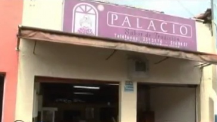
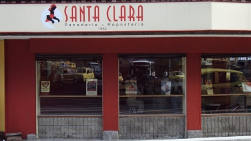

Medellín
Medellín es una ciudad cautivadora, no solo por su clima agradable; también por la amabilidad de su gente y su deliciosa gastronomía, entre los lugares patrimoniales y tradicionales encontramos:
Repostería Astor
En 1930, el suizo Enrique Baer abrió el Salón de Té Astor en Medellín, Colombia, donde había llegado unos años antes a trabajar como técnico pastelero en una fábrica de chocolates. Desde sus inicios, don Enrique y su esposa Anny Gippert se encargaron de supervisar la precisión de los procesos y la calidad de los productos que ofrecían en su nuevo Salón de Té Astor, en un pequeño local de la carrera Junín, epicentro social y comercial de la ciudad, con cinco mesas, diez empleados y un modesto y rudimentario equipo, compensado con los vastos conocimientos de su dueño. En la entrada del establecimiento, se exhibían para antojo de sus visitantes las galletas, los alfajores de almendra, las nueces de miel, las canastas de chocolate, los bizcochos, el famoso y tradicional “sapito”, y otros coloridos moritos, denominados así porque el acento natal de don Enrique le impedía pronunciar el sonido de la doble ere en español, cuando se refería a “morritos” de bizcocho.
Panadería Palacio
En el año de 1913 Carmelita Palacio y sus tres hijas en el municipio de Santa Rosa de Osos fundaron lo que actualmente conocemos como Panadería Palacio, quienes aprendieron junto a un monje español a preparar: mojicones, marranitas, bizcochos de yema, pan de yuca blando, rosquitas de anís, y otras recetas que llenarían los cajones y estanterías del lugar. A partir de la de la década de los cuarenta se trasladaron a la ciudad de Medellín para seguir con la tradición familiar.
Salón Versalles
Fundado por el argentino Leonardo Nieto el 15 de agosto de 1961, Versalles nació como heladería y pastelería y poco a poco se fue convirtiendo en punto de encuentro de todo lo diverso que se agitaba en la ciudad. Hasta allí llegaron para quedarse los nadaístas, esos jóvenes irreverentes que en los años sesenta sacudieron la tranquilidad de Medellín; allí llegaban también las colegialas que salían a “juniniear», los integrantes de los primeros grupos de teatro universitario e igualmente los deportistas de las ligas de ciclismo y atletismo de Antioquia. "Un punto de encuentro para los que disfrutan la gastronomía argentina, la tertulia, el fútbol y el tango. Un sitio emblemático en el centro de Medellín desde hace más de medio siglo."
Pastelería Santa Elena

Pastelería Santa Elena fue fundada por Elena Arango de Mejía, una chef formada en escuelas de cocina de Nueva York y en el Cordon Bleu de París, quien con responsabilidad, compromiso y optimismo superó dificultades económicas y de seguridad, e inició su propio negocio con pasteles de sal, promocionando principalmente el pastel Gloria.
Respotería y Pastelería Santa Clara
Contemporáneo a la Pastelería Santa Elena, doña Celia Bustamante comienza su negocio en 1954 la Repostería Santa Clara. El producto con el cual comenzaron fue la torta casera, de allí se desplego su gama de productos en repostería, panadería, chocolatería y dulces, pero siempre conservando la tradición de sus recetas y el horneado de sus productos.
